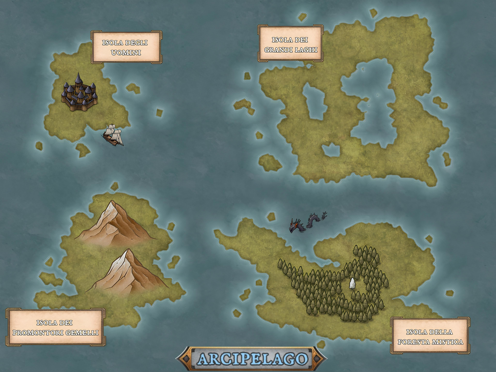

Map Of Thoughts
Benvenuto in Map of Thoughts, il blog che ovvero la mappa dei miei Pensieri!
Ho deciso di modellare i miei pensieri come un arcipelago, in quanto credo che sia la struttura migliore per riflettere la complessità della mente umana.
L'arcipelago mi permette di creare una moltitudine di isole che sono tra loro più o meno vicine, ma tutte immerse nello stesso mare.
La Mappa qui sotto ti permetterà di districarti tra le isole del mio Arcipelago, come vedi ci sono quattro isole
principali: l'isola degli Uomini, l'isola dei Promontori Gemelli, l'isola della Foresta
Mistica e l'isola dei Grandi Laghi.
Ognuna di queste è caratterizzata da uno o più argomenti, puoi iniziare ad esplorare questo mondo cliccando sui
titoli di ciascuna isola.
